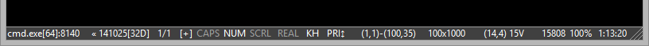

Status bar may be really useful. What process is executing in the console now? What console (index) is active? What is the size of console buffer? Where is cursor located? Caps/Num/Scroll, transparency, zoom, time and much more columns are available. Many of them are ‘clickable’ (try both LClick and RClick).

Of course you may configure columns set or hide StatusBar in the Settings.